Pour faire suite à l’article sur l’inauguration du Centre de représentation officielle de la République populaire de Donetsk en France, nous vous proposons une entrevue exclusive avec Monsieur le Président du Centre Hubert FAYARD afin d’évoquer avec lui l’histoire de la création de la Représentation, ses objectifs et projets.
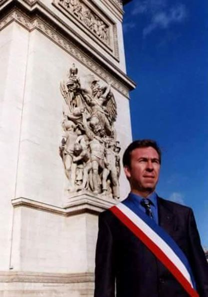Elena Sydorova : Bonjour Monsieur Fayard. Pouvez-vous vous présenter à nos lecteurs, s’il vous plaît ?
Huber Fayard : Je m’appelle Hubert Fayard, j’ai 59 ans et je vis en Provence, près de la ville d’Aix-en-Provence. Je suis veuf et père de quatre enfants.
Cadre territorial, j’ai débuté en politique dans les années 80 pour m’engager aux côtés de Jean-Marie Le Pen et de Jean-Pierre Stirbois au sein du Front National.
Élu en 1992, Conseiller régional d’Auvergne puis en 1998, Conseiller régional de Provence, j’ai exercé les fonctions de Premier Maire adjoint dans la commune de Vitrolles durant plusieurs années. Patriote, gaulliste, je suis fier de mon nom (hêtre en vieux français), de mes racines vellaves (Le Velay) et de mes passions bien françaises que sont le monde cynégétique, le rugby et l’histoire.
Actuellement, je suis comme beaucoup de français, orphelin car aucun mouvement de rassemblement de toutes les droites (des Républicains au Front National) n’existe dans l’actuel paysage de la politique française.
E.S. : Depuis quand vous intéressez-vous aux pays de la CEI ?
H.F. : Il y a très longtemps que je m’intéresse à l’est. J’étais à Moscou et dans les pays baltes dès 1991. Depuis, j’ai eu l’occasion de voyager dans de nombreux pays de l’est européen, dans les pays baltes, en Russie et en Ukraine. Et comme beaucoup de Français, je porte une admiration réelle au Président Poutine.
E.S. : Connaissiez-vous la ville de Donetsk avant la guerre ?
H.F. : Oui, je suis venu deux fois dans le Donbass avant la guerre, en 2013 et 2014. Je me souviens de l’aéroport de Donetsk, flambant neuf, et de la ville de Lugansk.
J’avais sillonné l’Ukraine et le Donbass, en free-lance pour un magazine français.
J’étais par hasard à Kiev au début des événements sur la place Maïdan et j’avais été frappé par la vision des portraits d’Hitler accrochés à la façade de la mairie de Kiev.
E.S. : Pourquoi le conflit au Donbass a attiré votre attention ?
H.F. : J’ai toujours soutenu les causes des peuples qui défendaient leur indépendance et la terre de leurs ancêtres et particulièrement la cause du Donbass.
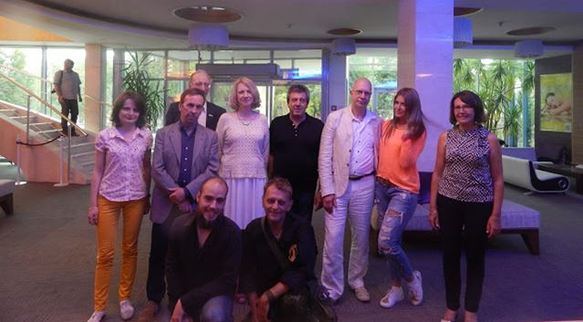J’ai suivi au quotidien les évènements du Donbass depuis le déclenchement des hostilités en 2014, agissant à mon humble niveau sur les réseaux sociaux en diffusant les informations. Puis, j’ai pu être en relation directe avec Erwan CASTEL et Svetlana KISSILEVA, nos deux amis journalistes.
E.S. : Comment l’idée de créer la Représentation de la République Populaire de Donetsk est née ?
H.F. : L’idée est née en regardant un reportage sur Arte concernant la représentation de la RPD en Tchéquie. Je me suis dit : pourquoi pas en France ?
Et c’est avec Erwan Castel et Svetlana KISSILEVA que l’idée s’est concrétisée. Nous avons beaucoup échangé et je me suis porté volontaire pour lancer l’opération.
E.S. : Quelles étaient les étapes à suivre pour y arriver ?
H.F. : Après avoir rédigé les statuts et après validation, j’ai déposé officiellement en Sous-Préfecture d’Aix-en-Provence, l’association « Centre de représentation de la République populaire de Donetsk en France », dépôt qui a été par la suite, conformément à la loi, publié au Journal Officiel de la République française. Notre association est régie par la loi de 1901 et je dirais également, protégée par la loi 1901. Vous comprendrez pourquoi par la suite.
Cette association que j’ai l’honneur de présider est également codirigée par Svetlana KISSELEVA et Jean-François PIERRE.
E.S. : Qui compose votre équipe ?
H.F. : L’équipe est active en France et à Donetsk. En France, je suis entouré des deux élus qui m’ont accompagné en juin dernier à Moscou puis à Donetsk, Christiane PUJOL Conseillère départementale des Bouches-du-Rhône et Christian BORELLI, Conseiller municipal de Vitrolles mais aussi par Marc PUJOL, l’époux de Christiane, Jacques CLOSTERMANN, citoyen d’honneur de Donetsk, fils du célèbre héros de la France Libre, et par Christian CAMISULI, le jeune de l’équipe responsable politique à Marseille. À Donetsk, ce sont le binôme Svetlana KISSILEVA et Erwan CASTEL qui sont nos fidèles et actifs correspondants.
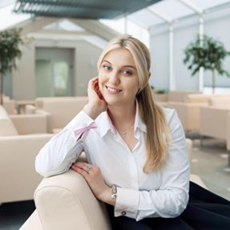E.S. : Du 24 au 26 juin vous avez rendu une visite officielle à Donetsk. Dans ce cadre le protocole d'accord avec Mme Natalia NIKONOROVA, la Ministre des Affaires étrangers de la RPD, a été signé. Est-ce que vous aviez également d’autres objectifs durant cette mission ?
H.F. : Oui, outre cette signature et ma nomination au poste de représentant honoraire pour la France, j’avais organisé la venue de cette délégation d’élu à Moscou puis à Donetsk.
À Moscou, j’ai pu rencontrer la secrétaire internationale de la Young Guard, Mlle Daria SHAROVA, une jeune femme brillante qui défend sans relâche l’image de sa patrie et nous avons eu l’honneur avec les deux élus d’être reçus officiellement à la Douma par la députée de Crimée, Natalya POKLONSKAYA.
C’était la première fois et je dois dire que j’étais très impressionné par l’accueil reçu au Parlement et par cette rencontre très protocolaire mais très instructive.
Nous avions abordé notre projet de représentation en France, n’oublions pas que la grand-mère de l’ancienne procureur de Crimée habite le Donbass, terre d’origine de Natalya POKLONSKAYA.
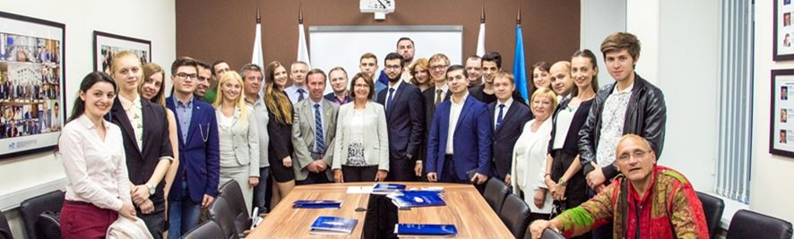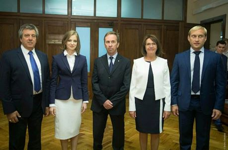Nous avons évoqué également les possibilités de partenariat entre une ville française et une ville de Crimée, en présence du maire de la ville d’Eupatoria, projet que je porte avec Jacques CLOSTERMANN.
Ensuite, nous avons pris la direction de Donetsk où nous avons passé un séjour inoubliable auprès de tous nos amis et très bien organisé par le Ministère des Affaires étrangères dirigé par Madame Natalia NIKONOROVA. Il est vrai que les élus français ne se sont pas bousculés pour venir dans le Donbass et notre venue a déclenché une vague de protestation des autorités ukrainiennes.
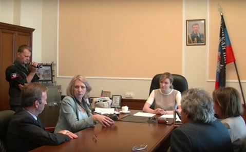À la vue des réactions sur les réseaux sociaux et dans la presse, notre mission était réussie car nous avions brisé un peu la chape de plomb médiatique, sans oublier les articles fantaisistes et informations tronquées.
Notre séjour fut riche en émotions lors des visites de l’hôpital, de l’orphelinat et des babouchkas dans leur maison en ruine après les bombardements.
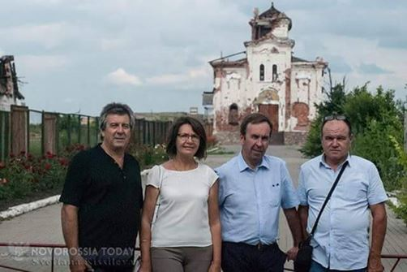
E.S. : Vous avez participé aux Deuxièmes Rencontres francophones organisées par l’Institut Franco-Russe de Donetsk. Quelles sont vos impressions sur cette manifestation ?
H.F. : Je dois vous dire mon étonnement de voir les membres de l’institut, parler notre langue avec passion et justesse. J’étais heureux de cette première rencontre (il y en aura beaucoup d’autres, j’espère !) et de nos échanges. Je dois féliciter toute l’équipe de l’Institut qui entretient avec fierté et courage la petite flamme de la francophonie sur les terres du Donbass, sans oublier sa directrice vous-même ma chère Elena qui fait un travail remarquable avec la revue dans laquelle j’ai l’honneur de figurer aujourd’hui.
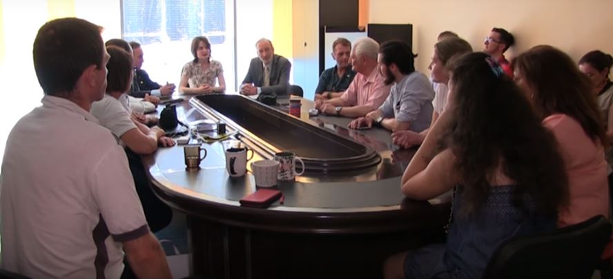
E.S. : Comment pourriez-vous présenter la ville de Donetsk en quelques mots-clés ?
H.F. : J’ai visité Donetsk avant la guerre et lors de mon dernier séjour en juin, j’ai trouvé la ville très propre, beaucoup plus propre que certaines villes françaises, et bien aménagée. On se sentait loin de la guerre et pourtant la ligne de front n’était qu’à deux kilomètres. C’est vraiment une capitale d’une République avec une administration, un parlement qui fonctionnent. On est loin du « pays fantôme » évoqués par certains journalistes…
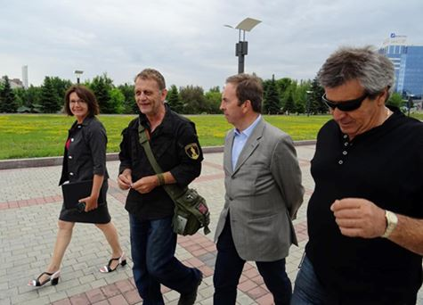
E.S. : Le 25 septembre 2017 c’était le jour de l’inauguration de la Représentation de la RPD en France à Marseille. Quel était le programme de cet événement ?
H.F. : Nous avions programmé une réception dans les salons de l’hôtel Novotel Prado à deux pas de notre adresse au 180 avenue du Prado, dans le 8° arrondissement de Marseille.
La Représentation existe officiellement à Marseille depuis le 1er septembre au cœur de la belle ville de Marseille sur l’une des plus grandes avenues de la capitale des Bouches-du-Rhône.
Cette réception-inauguration a donc eu lieu le lundi 25 septembre en fin d’après-midi malgré les nombreuses tentatives d’intimidations, menaces et fausses informations. Les extrémistes ukrainiens avaient lancés des appels à manifester devant l’hôtel. Ils avaient exigés auprès des autorités françaises la fermeture de notre association. Un point presse entre les ministères des affaires étrangères de la France et de l’Ukraine a eu lieu spécialement sur notre existence mais les autorités de Kiev semblaient ignorer les lois françaises. Ils pensaient faire fermer immédiatement notre représentation…
Et pour finir, l’ambassade d’Ukraine de Paris avait envoyé en mission ses deux attachés militaires. Lundi matin, le directeur de l’hôtel me contacte pour me demander si les colonels Vadim K et Oleg S figuraient parmi nos invités. Après recherches, nous avons découvert que nos deux « touristes » étaient les deux colonels de l’ambassade venus « renifler » notre réception. J’ai alerté les services de police et la presse et nos deux colonels (qui réfutent aujourd’hui leur déplacement et pour cause), sont repartis comme des voleurs, avant notre arrivée.
Objectif atteint ! Une soixantaine de participants étaient présents avec beaucoup de médias pour couvrir l’événement et plusieurs élus de la République, sans oublier les représentants des associations franco-russes.
Après la présentation des missions de la Représentation, l’assistance a pu entendre le message d’amitié en vidéo, de la Ministre des Affaires étrangères de la RPD, Madame Natalia NIKONOROVA. Les élus présents ont ensuite symboliquement coupé le ruban tricolore afin d’officialiser l’ouverture du Centre.
Parmi les élus, on pouvait reconnaître Christiane PUJOL, Conseillère départementale DLF, et Christian BORELLI Conseiller municipal LR et Conseiller National des Républicains, qui m’avaient accompagnés à Moscou puis Donetsk en juin dernier. Trois Maires adjoints de Marseille avaient fait le déplacement pour honorer de leur présence cette inauguration et de très nombreux élus, députés français et élus locaux, nous avaient fait parvenir des messages d’excuses.
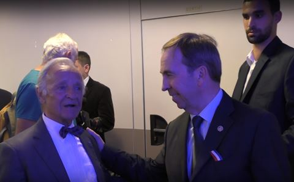Parmi eux, j’aimerai citer tout particulièrement Monsieur le Maire de Marignane et Vice-Président du département, Éric LE DISSÈS qui a confirmé dans la presse (la Provence, édition de l’étang, 3/10/17) son soutien officiel à l’ouverture de la Représentation de la RPD à Marseille.
Jacques CLOSTERMANN, citoyen d’honneur de Donetsk et fils du légendaire Pierre Clostermann, compagnon de la libération et le brillant Xavier MOREAU, fondateur de Stratpol.com, ont pris la parole pour évoquer la situation actuelle dans le Donbass et la genèse des événements qui ont conduit à ce sale conflit.
Le principal, c'est qu'on parle de vous - pour ou contre, peu importe. J’avais convié toute la presse locale et nationale à notre réception et les médias avaient fait le déplacement. La presse française, russe et… ukrainienne avaient répondu présente avec même un direct de la première chaine TV de Kiev. L’important était de brisé le mur médiatique et nous avons atteint notre objectif avec un déferlement d’articles dans la presse ukrainienne. Il vous suffit de taper dans les principaux moteurs de recherche comme Yandex ou Google, « DNR Marseille » et vous pourrez découvrir l’ampleur des retombées médiatiques. Mais certains médias ont malgré tout effectué un travail objectif.
Encore aujourd’hui, les dommages collatéraux de notre ouverture se poursuivent chez nos amis ukrainiens qui continuent à envoyer des lettres au Président Macron et au Premier ministre afin de demander la fermeture du Centre.
E.S. : Quelles sont les fonctions de la Représentation ?
H.F. : Les fonctions de la Représentation sont multiples. Bien évidement c’est représenter en France une entité à savoir la République Populaire de Donetsk. Bien que non reconnue par la France, le Donbass existe et on ne peut pas rayer son existence d’un trait de plume ou d’un coup de gomme. La République de Donetsk existe, fonctionne et vit. Le peuple du Donbass existe et a choisi la voie de la défense de sa langue, de son identité et surtout de prendre en main son destin.
Nous allons pouvoir diffuser à notre tour l’information. Actuellement en France, pays qui siège à Minsk dans le cadre du format Normandie des accords européens dits accords de Minsk (très peu respectée par l’Ukraine), il faut bien reconnaitre qu’une forme de désinformation existe sans oublier le basching anti Russie et anti poutine de la presse occidentale toujours avide de titres à sensations. Nous allons donc ouvrir une fenêtre en France et offrir une autre source d’information que celles issues d’Euromaidan-Presse !
Nous allons organiser des conférences notamment avec notre ami Xavier MOREAU, créer des liens culturels, économiques, étudiants mais aussi scolaires entre des classes françaises et de la République de Donetsk.
Un site officiel sera mis en ligne prochainement. Il offrira informations et services aux internautes français mais vous pouvez venir consulter la page Facebook du Centre.
Enfin, nous apporterons notre soutien aux associations qui viennent aider la population du Donbass durement frappée par le conflit. Ces deux associations sont Vostok et Urgence Enfants du Donbass. Elles se démènent avec peu de moyens et sans aucun soutien des autorités françaises, pour organiser des missions humanitaires sur les terres du Donbass.
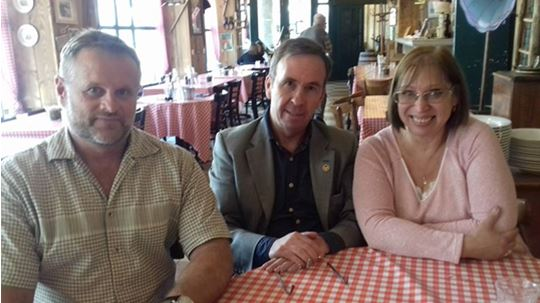
E.S. : Est-ce les Français peuvent adhérer aux activités de la Représentation ou bien proposer leurs propres projets ?
H.F. : Oui, nous invitons tous les amis du Donbass et d’ailleurs… toutes celles et tous ceux qui souhaitent apporter leur pierre à l’édifice, à nous adresser leur cotisation ou leur don via notre compte PayPal (adresse sur la page Facebook du Centre). Contrairement aux affirmations de beaucoup de médias, nous n’avons aucun soutien financier étranger et nous sommes des bénévoles à 1000 %.
Les Français intéressés peuvent aussi nous aider en offrant leurs services. Nous cherchons à avoir des contacts dans les universités (afin de créer des dialogues entre étudiants français et de Donetsk), dans le milieu scolaire (jumelage de classes de primaires), culturel mais aussi économique.
Nous travaillons également à l’ouverture d’une antenne régionale de la Représentation dans la moitié nord de la France.
E.S. : Merci Monsieur FAYARD et bon courage pour toutes vos actions au profit de Donetsk et de ses habitants.
Partager cette page